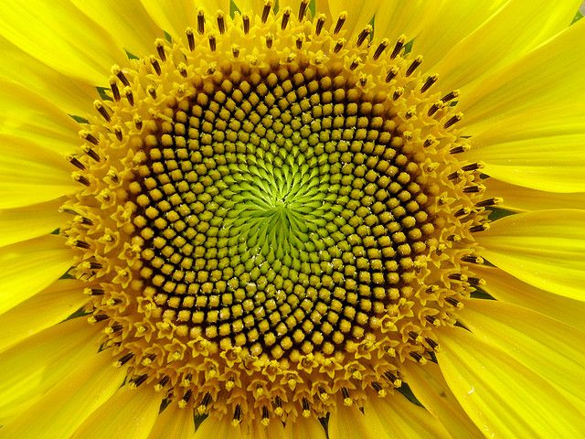

Fibonacci modulus
When we are going through every number of a fibonacci sequence and use a modulus(X) on that number, we always get a repeating sequence of remainders. We can plot those remainders on a circle where we have X-1 points. We draw lines between the current remainder and the previous remainder. This gets us some interesting results where some outcomes are perfectly symmetrical. For example fib mod X gives back the sequence 01120221. With X = 3 we have 3 points in the circle to draw lines to. from 0->1->1->2->2->1. Some cool examples:
Golden ratio
The golden ration has lots of usecases. See Wikipedia In this use case We spiral around the center with the golden ration as the angle change. This diagram closely resembles the seeds in a sunflowers top.

Beautiful trigonometry
These balls are each moving up and down a single line. Without the lines, it gives the neat illusion that the balls are moving in a circle
Cellular automata
Cellular automata is a beautifull example of simplified evolution. A set of rules defines if a creature (block) will live or die.
Double pendulum
Pretty self explenitory double pendulum.
Toothpick sequence
Put a new toothpick, crosswise, on every free end. Repeat. A fractal grows out of one rule.
How it works
Start with one toothpick. In each generation, every end that touches no other toothpick gets a new toothpick centred on it, at right angles. The running total — 1, 3, 7, 11, 15, 23, 35, 43, … — is OEIS A139250. Watch the counter: every time the generation hits a power of two, the pattern is a perfect square-ish "completed" shape.
Chaos game
We spawn a set of big points and a dot randomly placed on the screen. Every time we randomly choos a point to move towards. The distance moved is the distance from the current point to said point divided by a set amount. We leave a trail for some interesting fractals.
The magic highway
We get an interesting 'magic highway' when we show the medicenter, circumcenter and orthocenter.
Times tables
Put points on a circle. Connect point n to point n × k. At k = 2 a cardioid shows up. Nobody invited it.
How it works
Number the points 0 to N − 1. For every point n, draw a line to point n · k, wrapping around with modulo N. That's all of it.
k = 2 gives a cardioid, k = 3 a nephroid, and in general you get k − 1 cusps. Let it count up and the shapes melt into each other. Same trick as the Fibonacci one up top, just with multiplication.
Recamán sequence
Go back if you can. Otherwise go forward. Draw every jump as a half circle.
How it works
Start at 0. On step n, jump back n if that lands on a positive number you haven't been to yet. If not, jump forward n. So 0, 1, 3, 6, 2, 7, 13, 20, 12, 21, 11, …
Nobody knows if every whole number eventually shows up. People do know it sounds nice. Tick the box.
Langton's ant
One ant, two rules, ten thousand steps of mess. Then out of nowhere it builds a highway.
How it works
On an empty cell the ant turns right, on a black one it turns left. Either way it flips the cell and steps forward. That's it.
For about 10,000 steps it makes a mess. Then it starts building a diagonal "highway" and never stops. Nobody has proven it always does. The longer rules give every colour its own turn: R is right, L is left, one letter per colour.
Mandelbrot & Julia
z → z² + c, over and over. Drag on the picture to pick c.
How it works
Take a number z, square it, add c, repeat. Either it runs off to infinity or it doesn't. The Julia set for c is every starting z that doesn't (black). Red is how long the rest took to escape.
The Mandelbrot set is every c whose Julia set comes in one piece. So every point you drag through is its own Julia set: deep inside you get a blob, near the edge the weird ones, outside it falls apart into dust.
Ulam spiral
Write the numbers in a spiral and colour the primes. They line up. They shouldn't.
How it works
Stanisław Ulam doodled this in a boring meeting in 1963. Primes are supposed to look pretty random, yet they bunch up along diagonals. Those diagonals are quadratics that happen to hit a lot of primes.
Start at 41 and look at the diagonal through the middle. That's Euler's n² + n + 41, which is prime for every n from 0 to 39.
Buffon's needle
Throw needles on lined paper. Count how many cross a line. Get π.
How it works
If a needle is as long as the gap between the lines, the chance it crosses one is 2/π. Turn that around and π ≈ 2 × needles ÷ crossings. Shorter needles work too, you just scale by the length.
The Comte de Buffon worked this out in 1777. It gets to π slowly. Really slowly. That's part of the charm.
Harmonograph
Two pendulums move a pen, a third swings the paper. Friction does the rest.
How it works
A harmonograph is a Victorian drawing machine. Every pendulum is a sine wave that slowly dies out. Add a few up and you get these.
When the frequencies are almost whole-number ratios, like 2 : 3.006, the tiny mistake makes the figure turn slowly as it shrinks. Hit random until you get a good one.